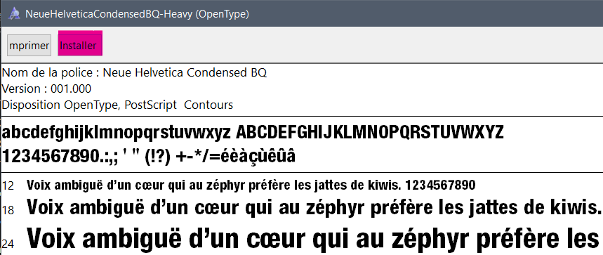
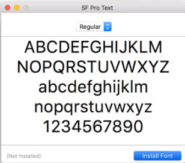

Les Prérequis
Eh oui il faut déjà commencer par installer ce qu'il faut pour faire marcher le template :
1 - Gimp
Gimp est logiciel de manipulation d'image, gratuit et open source,
il n'a rien a envier à d'autres logiciel comme Photoshop.
Je ne suis pas là pour en faire la pub, mais si vous cherchiez un logiciel comme Photoshop alors vous allez faire d'une pierre deux coups.
Si vous en possédiez déjà un... désolé de vous forcer la main pour en installer un autre.
Voici le lien pour l'installer, comptez 2~3 giga Gimp Téléchargement.
C'est fait ? super ! Suivez l'étape deux avant de poursuivre.
2 - Les polices
Gimp utilse par défaut les polices installées sur votre ordinateur, ce qui fait Beaucoup de polices.
Malheureusement, celles que j'ai utilisé dans le Template ne sont pas dans Gimp par défaut : On va donc les installer !
Ne vous inquiêtez pas, c'est très faciles, les fichiers sont stocké dans Tutoriel Krosmaster Gimp\polices\...
Pour les installer, ouvrez-les et cliquez sur installer :

Sur MacOs, ça devrait ressembler à quelque chose comme ça :

Á quoi elles servent ?
- Le nom du Krosmaster : MatoSans-Bold
- Les noms des sorts : shapiro-w05-63-italic
- Les chiffres (stats, portées, dégâts) : neue-helvetica-condensed-87-heavy
- Les textes d'effets à l'intérieurs des sorts : Nimbus-Sans-D-OT-Light-Condensed_32749
Maintenant vous pouvez ouvrir le Template Krosmaster (.xcf) !
Conseil N°1